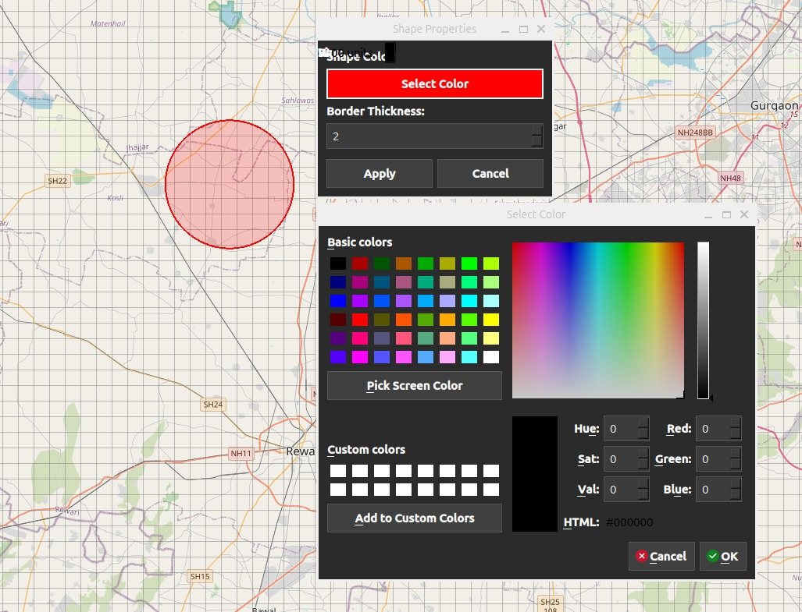
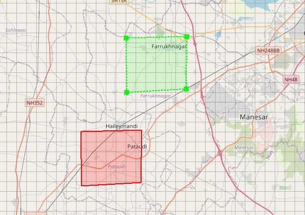
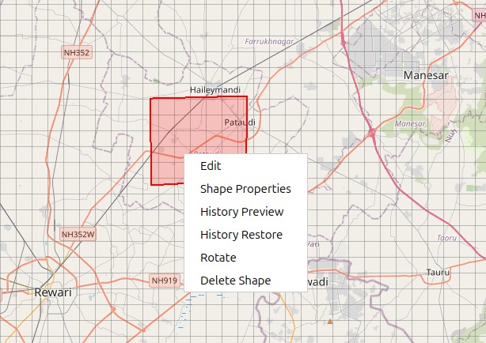

Shape Drawing Features User Guide
Shape Icon Overview
The Shape button allows you to draw various geometric shapes and lines directly on the map for marking areas, creating boundaries, and visualizing spatial relationships.
How to Draw Shapes
Accessing Shape Tools
Click the Shape icon on the Design Toolbar
A dropdown menu appears with all available shape types
Select the shape you want to draw
The cursor changes to a crosshair, indicating drawing mode
Available Shape Types
Draw Line - Creates multi-segment connected lines - Usage:
Click to place each vertex
Continue clicking to add segments
Double-click to finish
Press ESC to cancel
Circle - Creates circular areas with a defined radius - Usage:
Single click to place the center
Circle is created with default size
Automatically exits drawing mode
Rectangle - Creates rectangular areas - Usage:
Single click to place rectangle
A default-sized rectangle is created
Automatically exits drawing mode
Polygon - Creates multi-sided closed shapes - Usage:
Click to place each vertex
Continue clicking to add sides
Double-click to close and finish
Press ESC to cancel
Points - Creates individual point markers - Usage:
Click to place each point
Every click creates a new point
Stays in drawing mode until manually exited
Shape Management & Editing
Selecting Shapes
Switch to Move Mode (hand icon)
Click any shape to select it
Selected shapes display a selection outline
Moving Shapes
Select the shape in Move Mode
Click and drag to reposition
Coordinates update in real time
Resizing Shapes
Right-click the shape → Edit
Resize handles appear at edges and corners
Drag handles to resize
Click outside the shape to exit edit mode
Shape Properties
Right-click on any shape and select Shape Properties to customize its appearance.
Border Color – Change the shape’s border color using the color picker.
Border Thickness – Adjust the thickness of the shape’s border.
{kind=link}

History Preview, Restore & Hide
History Preview
When a user drags, resizes, or rotates any shape, all previous states are automatically saved in the shape history.
Drag any shape on the map
Right-click on the same shape.
Select History Preview
Previous positions, sizes, and rotations are displayed as outline previews on the map
The current shape remains unchanged while previewing history
{kind=link}

History Restore
If the user wants to revert the shape to a previous position or size:
Right-click the shape
Select History Restore
Choose a previous history state
The shape is restored to the selected position, size, and rotation
{kind=link}

Hide History Preview
To remove history visuals from the map:
Right-click the shape
Select Hide Preview
All history outline previews are hidden
The shape remains in its current state
Rotation
Right-click the shape → Rotate
A rotation handle appears
Drag the handle to rotate the shape
A visual rotation guide is displayed